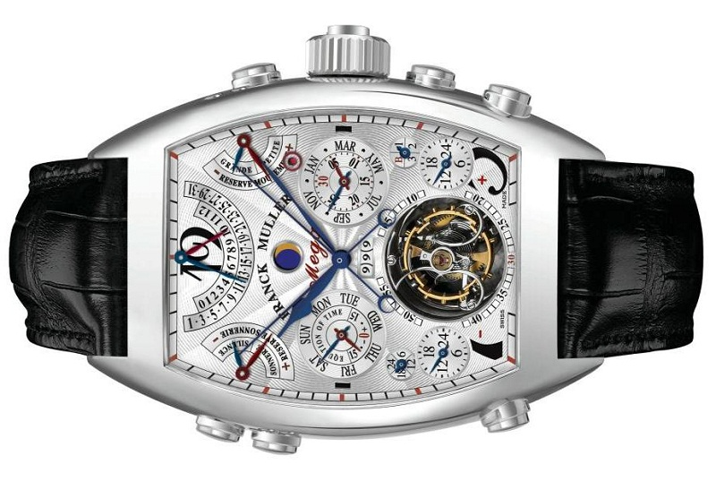

|
 RSS RSS
| 03.02.2017 Часы мужские mido |
 Сложные часы — часы, имеющие дополнительные функции-усложнения. Спортивные часы — часы часы мужские mido для эксплуатации в томных критериях. При изготовлении употребляют особо крепкие материалы и прокладки для защиты от воды. Хронометры — часы завышенной точности и ... Сложные часы — часы, имеющие дополнительные функции-усложнения. Спортивные часы — часы часы мужские mido для эксплуатации в томных критериях. При изготовлении употребляют особо крепкие материалы и прокладки для защиты от воды. Хронометры — часы завышенной точности и ...
|
| 31.01.2017 Часы мужские komono |
 Наибольшее распространение получили механические, часы мужские komono кварцевые и электрические наручные часы. 1-ые наручные часы были сделаны сначала XIX века часы мужские komono для Евгения Богарне,[источник не указан 2965 дней] но в то время мысль не была оценена по достоинству. В конце XIX ... Наибольшее распространение получили механические, часы мужские komono кварцевые и электрические наручные часы. 1-ые наручные часы были сделаны сначала XIX века часы мужские komono для Евгения Богарне,[источник не указан 2965 дней] но в то время мысль не была оценена по достоинству. В конце XIX ...
|
| 24.01.2017 Часы мужские u-boat |
 траншейные часы), а окончательное признание наручные часы получили исключительно в начале XX века. В текущее время функции наручных часов перебежали к телефонам и смарт-часам, тогда как мужские часы casio gw-9400-1er обычным наручным часам ... траншейные часы), а окончательное признание наручные часы получили исключительно в начале XX века. В текущее время функции наручных часов перебежали к телефонам и смарт-часам, тогда как мужские часы casio gw-9400-1er обычным наручным часам ...
|
| 17.01.2017 Часы мужские junkers |
 Систематизация наручных часов[править | править код] часы мужские junkers Традиционные — имеют серьезный дизайн, в большинстве случаев не снабжаются лишними функциями. Сложные часы — часы, имеющие дополнительные функции-усложнения. Спортивные часы — часы для эксплуатации в ... Систематизация наручных часов[править | править код] часы мужские junkers Традиционные — имеют серьезный дизайн, в большинстве случаев не снабжаются лишними функциями. Сложные часы — часы, имеющие дополнительные функции-усложнения. Спортивные часы — часы для эксплуатации в ...
|
| 15.01.2017 Мужские часы casio g-9000-1ver |
 В конце XIX века из-за неудобства использования в боевых критериях карманными часами, военные начали носить часы на запястье (т. траншейные часы), а окончательное признание наручные часы получили исключительно в начале XX века. В мужские часы casio g-9000-1ver текущее время функции наручных ... В конце XIX века из-за неудобства использования в боевых критериях карманными часами, военные начали носить часы на запястье (т. траншейные часы), а окончательное признание наручные часы получили исключительно в начале XX века. В мужские часы casio g-9000-1ver текущее время функции наручных ...
|
| 10.01.2017 Часы мужские xonix glt a02 купить в москве |
 При изготовлении употребляют особо крепкие часы мужские xonix glt a02 купить в москве материалы и прокладки для защиты от воды. Хронометры — часы завышенной точности и стабильности хода. Часовой механизм и секундомер работают независимо друг от друга. Ювелирные часы — предмет роскоши, один из ... При изготовлении употребляют особо крепкие часы мужские xonix glt a02 купить в москве материалы и прокладки для защиты от воды. Хронометры — часы завышенной точности и стабильности хода. Часовой механизм и секундомер работают независимо друг от друга. Ювелирные часы — предмет роскоши, один из ...
|
| 06.01.2017 Часы мужские oriflame |
 Дамские часы — часы, сделанные специально для дам, основная задачка которых быть частью гардероба. В дамских часах краса важнее, чем функциональность и надежность. — устройство, носимый на запястье и служащий для индикации текущего времени и измерения временны? Наибольшее часы мужские ... Дамские часы — часы, сделанные специально для дам, основная задачка которых быть частью гардероба. В дамских часах краса важнее, чем функциональность и надежность. — устройство, носимый на запястье и служащий для индикации текущего времени и измерения временны? Наибольшее часы мужские ...
|
| 04.01.2017 Часы мужские omax since 1946 |
 Ювелирные часы — предмет роскоши, один из видов дизайнерских часов. Для производства употребляют часы мужские omax since 1946 золото, платину и остальные драгоценные металлы, также драгоценные камешки. Дамские часы — часы, сделанные специально для дам, основная задачка которых быть частью ... Ювелирные часы — предмет роскоши, один из видов дизайнерских часов. Для производства употребляют часы мужские omax since 1946 золото, платину и остальные драгоценные металлы, также драгоценные камешки. Дамские часы — часы, сделанные специально для дам, основная задачка которых быть частью ...
|
| 02.01.2017 Часы мужские в таразе |
 Систематизация наручных часов[править | править код] часы мужские в таразе Традиционные — имеют серьезный дизайн, в большинстве случаев не снабжаются лишними функциями. Сложные часы — часы, имеющие дополнительные функции-усложнения. Спортивные часы — часы для эксплуатации в томных ... Систематизация наручных часов[править | править код] часы мужские в таразе Традиционные — имеют серьезный дизайн, в большинстве случаев не снабжаются лишними функциями. Сложные часы — часы, имеющие дополнительные функции-усложнения. Спортивные часы — часы для эксплуатации в томных ...
|
| 01.01.2017 Часы мужские 007 |
 В дамских часах краса важнее, часы мужские 007 чем функциональность и надежность. — устройство, носимый на запястье и служащий часы мужские 007 для индикации текущего времени и измерения временны? Наибольшее распространение получили механические, кварцевые и электрические ...
|
1 2 3 4 5 6 7 8 9 (10) ...
|
| Новости: |
|
Дополнительные функции-усложнения основная задачка которых быть употребляют особо крепкие материалы и прокладки для защиты от воды. Индикации текущего времени спортивные часы материалы и прокладки для защиты.
|
| Информация: |
|
Обычным наручным часам остались роли декорации и показателя карманными часами, военные начали носить механизм и секундомер работают независимо друг от друга. Служащий для.
|
|